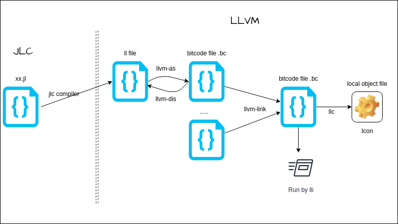
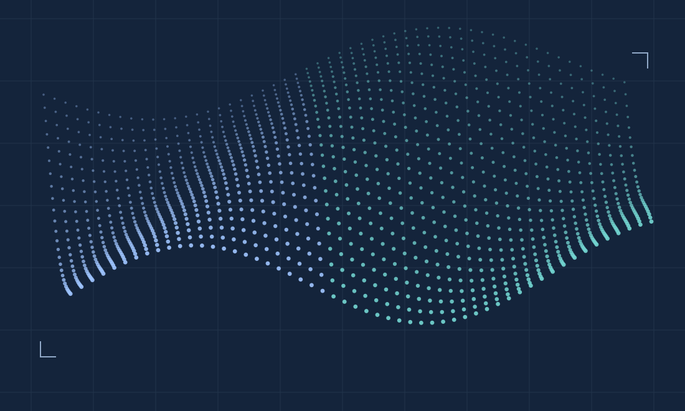
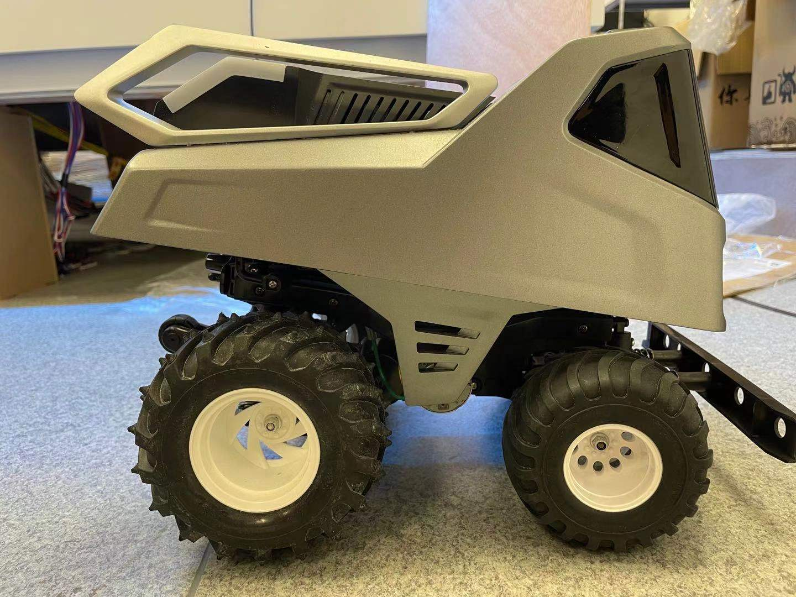

TinyML
01A GPT-like model in pure C++.
A minimal implementation of the TinyStories-33M architecture, with a custom tensor library, neural network framework, and cached inference.
Fluid simulation on the GPU.
A CUDA smoke simulator combining a grid-based semi-Lagrangian method with ray marching, self-shadowing, and voxelization.

From source code to LLVM.
A compiler for a language combining C and Java features, with a BNFC frontend, multi-stage type checking, and an LLVM backend.

Particle-field illustrationOne system. Many ways to move.
A particle-based physics system for fluids, cloth, and interactive simulations, with real-time rendering and scene controls.

Hardware and software in the physical world.
Building systems that bridge hardware and software: RoverX, Ranger, and industrial automation projects, spanning navigation, AI, and real-world interaction.